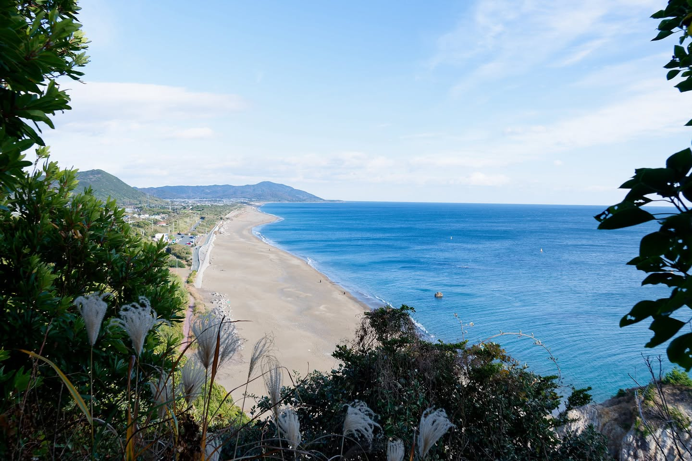
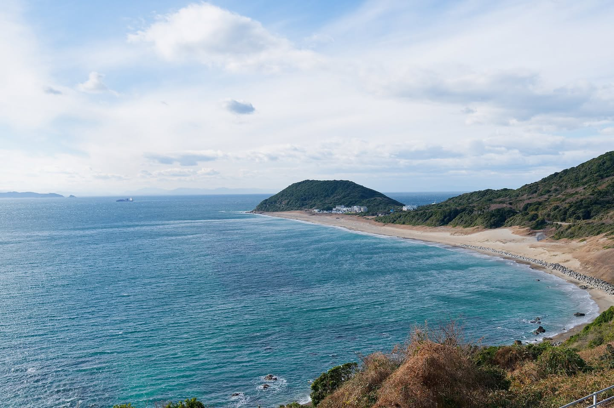

Year-end, with no particular plan, I went out to Cape Irago in Aichi. It sits at the tip of the Atsumi Peninsula, where Mikawa Bay meets the Pacific. With nothing in mind beyond camera practice, I just wandered around.
White lighthouse, winter sea

The wind was something else. The cape has nothing to break it, and the winter sea wind hits without mercy. With the camera up, it felt like I'd be carried off bodily.
The light was beautiful, though. Light on a clear winter day comes in low and sharp; the blue of the sea and the white of the sand stand out. The kind of light you trade the cold for.
From the headland


From higher ground, you can see the Pacific coast stretching out wide. The Mikawa Bay side is visible too, in the distance. The waves are completely different — calm on the bay side, white-capped on the Pacific side.
About the bakagai
The Irago area is known as a producer of bakagai (literally "fool clams"). Locally that's the name; in sushi shops they show up as aoyagi. I thought about ordering some, then didn't. Eating bakagai alone at year-end felt a bit lonely. Next time.